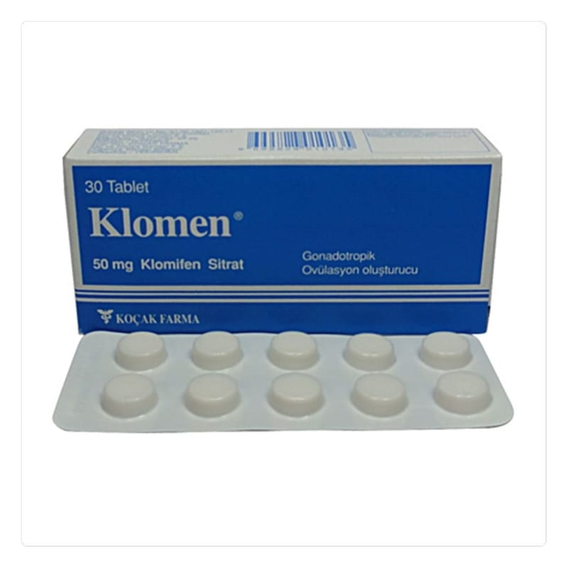

Klomen 50 mg Tablet, 10 Adet

Ne için kullanılır
KT · Bölüm 1KLOMEN, blister ambalajında 10 ve 30 tablet içerir. Bunlar sarı renkli, bir yüzü çentikli yuvarlak tabletlerdir.
KLOMEN’de yardımcı madde olarak bulunan laktoz sığır kaynaklıdır. KLOMEN aşağıdaki durumlarda kullanılmaktadır: - Yumurtlama problemi olan ve gebe kalmak isteyen hastalarda yumurtlamayı desteklemek için ve adet düzensizliğinin düzeltilmesinde, - Tüp bebek tedavisinde çoklu folikül gelişiminin temini için, - Birinci derece, hipotalamus, hipofiz ve testis yetersizliği olmayan erkeklerde sperm sayısının arttırılması amacıyla kullanılmaktadır.